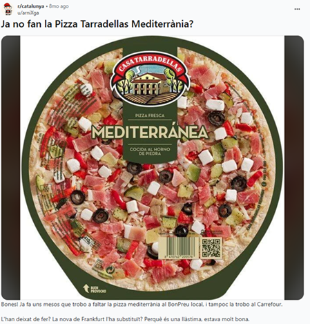

m'he fet una pàgina web. per què m'he fet una pàgina web? per una banda, per un procés d'aprenentatge. crec que hi ha alguna cosa d'artesanal i d'ofici en aprendre codi i publicar una cosa feta per un mateix. en un món on cada cop costa més discernir allò autèntic i real d'allò fet per la intel·ligència artificial, fer una pàgina web cutre a mà és una cosa que em ve de gust. és una mica com aquest tiktok. no em vull quedar tonto, escriure és més important que mai. hi ha un plaer en fer les coses per a tu mateix, sense ajuda de cap eina d'ia. també suposa més esforç, però crec que les coses que comporten un esforç també generen una recompensa més gran.
continua llegint